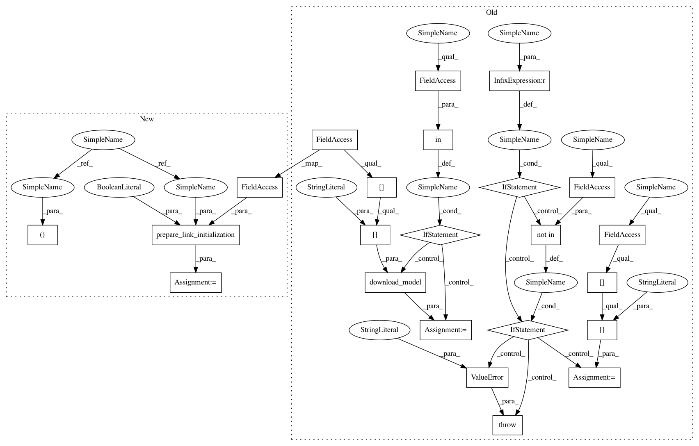

76b060f625e037d479a2eb25462a3b3f70af5bb7,chainercv/links/model/segnet/segnet_basic.py,SegNetBasic,__init__,#SegNetBasic#Any#Any#Any#,64
Before Change
}
def __init__(self, n_class=None, pretrained_model=None, initialW=None):
if n_class is None:
if pretrained_model not in self._models:
raise ValueError(
"The n_class needs to be supplied as an argument.")
n_class = self._models[pretrained_model]["n_class"]
if initialW is None:
initialW = chainer.initializers.HeNormal()
super(SegNetBasic, self).__init__()
with self.init_scope():
self.conv1 = L.Convolution2D(
None, 64, 7, 1, 3, nobias=True, initialW=initialW)
self.conv1_bn = L.BatchNormalization(64, initial_beta=0.001)
self.conv2 = L.Convolution2D(
64, 64, 7, 1, 3, nobias=True, initialW=initialW)
self.conv2_bn = L.BatchNormalization(64, initial_beta=0.001)
self.conv3 = L.Convolution2D(
64, 64, 7, 1, 3, nobias=True, initialW=initialW)
self.conv3_bn = L.BatchNormalization(64, initial_beta=0.001)
self.conv4 = L.Convolution2D(
64, 64, 7, 1, 3, nobias=True, initialW=initialW)
self.conv4_bn = L.BatchNormalization(64, initial_beta=0.001)
self.conv_decode4 = L.Convolution2D(
64, 64, 7, 1, 3, nobias=True, initialW=initialW)
self.conv_decode4_bn = L.BatchNormalization(64, initial_beta=0.001)
self.conv_decode3 = L.Convolution2D(
64, 64, 7, 1, 3, nobias=True, initialW=initialW)
self.conv_decode3_bn = L.BatchNormalization(64, initial_beta=0.001)
self.conv_decode2 = L.Convolution2D(
64, 64, 7, 1, 3, nobias=True, initialW=initialW)
self.conv_decode2_bn = L.BatchNormalization(64, initial_beta=0.001)
self.conv_decode1 = L.Convolution2D(
64, 64, 7, 1, 3, nobias=True, initialW=initialW)
self.conv_decode1_bn = L.BatchNormalization(64, initial_beta=0.001)
self.conv_classifier = L.Convolution2D(
64, n_class, 1, 1, 0, initialW=initialW)
self.n_class = n_class
if pretrained_model in self._models:
path = download_model(self._models[pretrained_model]["url"])
chainer.serializers.load_npz(path, self)
elif pretrained_model:
chainer.serializers.load_npz(pretrained_model, self)
def _upsampling_2d(self, x, pool):
if x.shape != pool.indexes.shape:
min_h = min(x.shape[2], pool.indexes.shape[2])
min_w = min(x.shape[3], pool.indexes.shape[3])
After Change
}
def __init__(self, n_class=None, pretrained_model=None, initialW=None):
n_class, path = prepare_link_initialization(
n_class, self._models, False)
if initialW is None:
initialW = chainer.initializers.HeNormal()
In pattern: SUPERPATTERN
Frequency: 3
Non-data size: 23
Instances
Project Name: chainer/chainercv
Commit Name: 76b060f625e037d479a2eb25462a3b3f70af5bb7
Time: 2018-05-01
Author: yuyuniitani@gmail.com
File Name: chainercv/links/model/segnet/segnet_basic.py
Class Name: SegNetBasic
Method Name: __init__
Project Name: chainer/chainercv
Commit Name: 76b060f625e037d479a2eb25462a3b3f70af5bb7
Time: 2018-05-01
Author: yuyuniitani@gmail.com
File Name: chainercv/links/model/faster_rcnn/faster_rcnn_vgg.py
Class Name: FasterRCNNVGG16
Method Name: __init__
Project Name: chainer/chainercv
Commit Name: 76b060f625e037d479a2eb25462a3b3f70af5bb7
Time: 2018-05-01
Author: yuyuniitani@gmail.com
File Name: chainercv/experimental/links/model/fcis/fcis_resnet101.py
Class Name: FCISResNet101
Method Name: __init__